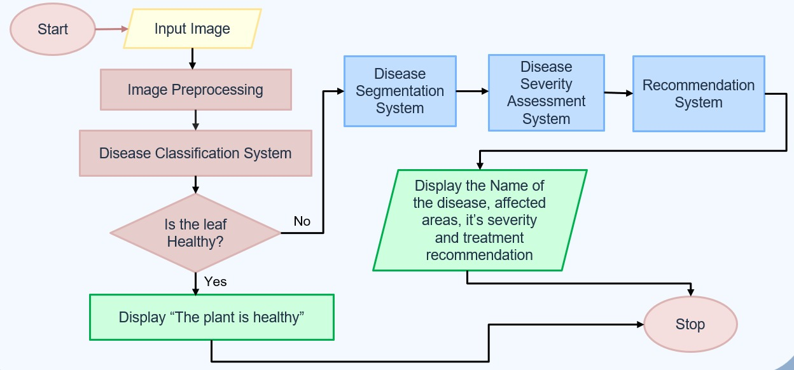

<!DOCTYPE html>
<html lang="en">
<head>
  <meta charset="UTF-8" />
  <meta name="viewport" content="width=device-width, initial-scale=1.0" />
  <link rel="icon" type="image/svg+xml" href="./URLicon.png" />
  <title>Tea Disease Detection - College Project</title>
  <script src="https://cdn.tailwindcss.com"></script>
  <script src="https://cdn.jsdelivr.net/npm/react@18.2.0/umd/react.production.min.js"></script>
  <script src="https://cdn.jsdelivr.net/npm/react-dom@18.2.0/umd/react-dom.production.min.js"></script>
  <script src="https://cdn.jsdelivr.net/npm/babel-standalone@6.26.0/babel.min.js"></script>
</head>
<body class="bg-gray-100 text-gray-800 font-sans">
  <div id="root"></div>

  <script type="text/babel">
    function Navbar() {
      return (
        <nav class="bg-green-600 p-6 fixed w-full top-0 z-10 shadow-lg">
          <div class="container mx-auto flex justify-between items-center max-w-7xl">
            <div class="text-3xl font-bold text-white">Tea Disease Detection</div>
            <div class="space-x-6">
              <a href="#home" class="text-white hover:text-green-200 text-lg">Home</a>
              <a href="#features" class="text-white hover:text-green-200 text-lg">Features</a>
              <a href="#how-it-works" class="text-white hover:text-green-200 text-lg">How It Works</a>
              <a href="#about" class="text-white hover:text-green-200 text-lg">About</a>
              <a href="#team" class="text-white hover:text-green-200 text-lg">Team</a>
              <a href="http://localhost:5173/" class="bg-white text-green-600 px-6 py-3 rounded-lg text-lg font-semibold hover:bg-green-100">Try Now</a>
            </div>
          </div>
        </nav>
      );
    }

    function Hero() {
      return (
        <section id="home" class="min-h-screen flex items-center justify-center bg-gradient-to-r from-green-50 to-green-200 pt-20">
          <div class="container mx-auto text-center px-6 max-w-5xl">
            <h1 class="text-4xl md:text-5xl font-bold mb-8 leading-tight">Tea Disease Detection Web App</h1>
            <p class="text-lg md:text-xl mb-10 text-gray-700 max-w-3xl mx-auto">A college project leveraging deep learning to identify tea leaf diseases with high accuracy, empowering farmers and researchers.</p>
            <a href="http://localhost:5173/" class="bg-green-600 text-white px-8 py-4 rounded-lg text-lg font-semibold hover:bg-green-700">Try Now</a>
          </div>
        </section>
      );
    }

    function Features() {
      const features = [
        {
          title: "Disease Detection",
          description: "Employs advanced segmentation techniques to accurately identify tea leaf diseases such as Tea Leaf Blight, Red Spot, and Brown Blight with high precision.",
          icon: "🔍",
        },
        {
          title: "Severity Analysis",
          description: "Assesses the extent of disease progression in tea leaves, providing detailed severity levels to guide targeted interventions.",
          icon: "📊",
        },
        {
          title: "Tailored Recommendations",
          description: "Delivers customized treatment and prevention strategies using a state-of-the-art Retrieval-Augmented Generation (RAG) model, based on disease type and severity.",
          icon: "💡",
        },
      ];

      return (
        <section id="features" class="py-24 bg-white">
          <div class="container mx-auto px-6 max-w-7xl">
            <h2 class="text-4xl font-bold text-center mb-16">Key Features</h2>
            <div class="grid grid-cols-1 md:grid-cols-2 lg:grid-cols-3 gap-10">
              {features.map((feature, index) => (
                <div key={index} class="bg-gray-50 p-8 rounded-xl shadow-md text-center hover:shadow-lg transition-shadow">
                  <div class="text-5xl mb-6">{feature.icon}</div>
                  <h3 class="text-xl font-semibold mb-4">{feature.title}</h3>
                  <p class="text-gray-600 leading-relaxed">{feature.description}</p>
                </div>
              ))}
            </div>
          </div>
        </section>
      );
    }

    function HowItWorks() {
      return (
        <section id="how-it-works" class="py-24 bg-gray-50">
          <div class="container mx-auto px-6 max-w-7xl text-center">
            <h2 class="text-4xl font-bold mb-10">How It Works</h2>
            <div class="flex justify-center">
              
            </div>
          </div>
        </section>
      );
    }

    function About() {
      return (
        <section id="about" class="py-24 bg-gray-50">
          <div class="container mx-auto px-6 max-w-5xl text-center">
            <h2 class="text-4xl font-bold mb-10">About the Project</h2>
            <p class="text-lg md:text-xl mb-10 text-gray-700 leading-relaxed">
              This project leverages deep learning and image segmentation to detect tea leaf diseases and analyze their severity. Using modern AI approaches like Retrieval-Augmented Generation (RAG), it provides tailored disease management recommendations. Built with the goal of supporting farmers, researchers, and agronomists, the platform simplifies early detection and treatment — promoting healthier tea cultivation and minimizing crop loss.
            </p>
            <a href="http://localhost:5173/" class="text-green-600 hover:underline text-lg font-semibold">Try the Prediction Tool</a>
          </div>
        </section>
      );
    }

    function Team() {
  const teamMembers = [
    { name: "Devasmita Kundu", role: "ML Specialist", image: "./team/devasmita.jpg" },
    { name: "Sir Arya Chatterjee (GOAT)", role: "Backend Developer", image: "./team/arya.jpg" },
    { name: "Smarat Ghosh", role: "Frontend Developer", image: "./team/piku.jpg" },
    { name: "Jaya Sinha Mahapatra", role: "UI/UX Designer", image: "./team/jaya.jpg" },
    { name: "Pranjal Title bhule gechi", role: "ML Specilaist", image: "./team/pranjal.jpg" },
    { name: "Yash Thakur", role: "Documentation Head", image: "./team/yash.jpg" },
  ];

  return (
    <section id="team" class="py-24 bg-white">
      <div class="container mx-auto px-6 max-w-7xl text-center">
        <h2 class="text-4xl font-bold mb-12">Meet Our Team</h2>
        <div class="grid grid-cols-1 sm:grid-cols-2 md:grid-cols-3 gap-12">
          {teamMembers.map((member, index) => (
            <div key={index} class="bg-gray-50 p-6 rounded-xl shadow-md hover:shadow-lg transition duration-300">
              
              <h4 class="text-xl font-semibold">{member.name}</h4>
              <p class="text-green-600 font-medium">{member.role}</p>
              <p class="text-sm text-gray-500">CSE 2025</p>
            </div>
          ))}
        </div>
      </div>
    </section>
  );
}


    function CTA() {
      return (
        <section id="try-now" class="py-24 bg-gradient-to-r from-green-200 to-green-400">
          <div class="container mx-auto text-center px-6 max-w-5xl">
            <h2 class="text-4xl font-bold mb-10">Ready to Detect Tea Diseases?</h2>
            <p class="text-lg md:text-xl mb-10 text-gray-800 leading-relaxed">
              Upload an image of a tea leaf on our prediction page to identify potential diseases instantly. Start now and explore the power of AI in agriculture!
            </p>
            <a href="http://localhost:5173/" class="bg-green-600 text-white px-8 py-4 rounded-lg text-lg font-semibold hover:bg-green-700">Try Now</a>
          </div>
        </section>
      );
    }

    function Footer() {
      return (
        <footer class="bg-green-600 py-8">
          <div class="container mx-auto text-center px-6 max-w-7xl">
            <p class="text-white text-lg">© 2025 Tea Disease Detection Project.</p>
          </div>
        </footer>
      );
    }

    function App() {
      React.useEffect(() => {
        const track = document.getElementById("carousel-track");
        let position = 0;
        const slideWidth = 270; // width + gap of each card

        setInterval(() => {
          position = (position + 1) % 6;
          track.style.transform = `translateX(-${position * slideWidth}px)`;
        }, 2000);
      }, []);

      return (
        <div>
          <Navbar />
          <Hero />
          <Features />
          <HowItWorks />
          <About />
          <Team />
          <CTA />
          <Footer />
        </div>
      );
    }

    ReactDOM.render(<App />, document.getElementById("root"));
  </script>
</body>
</html>
